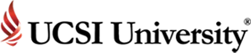
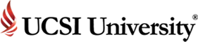
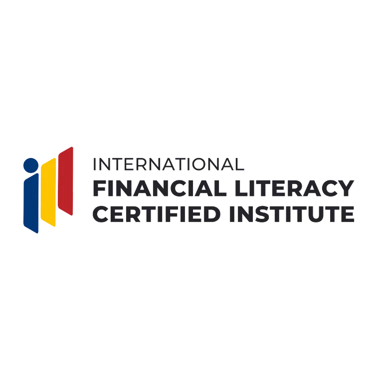
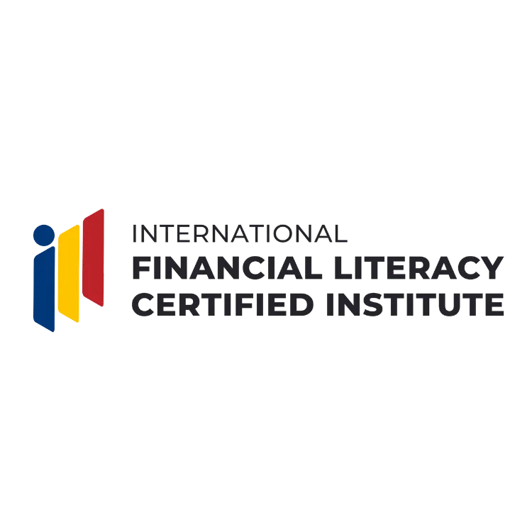
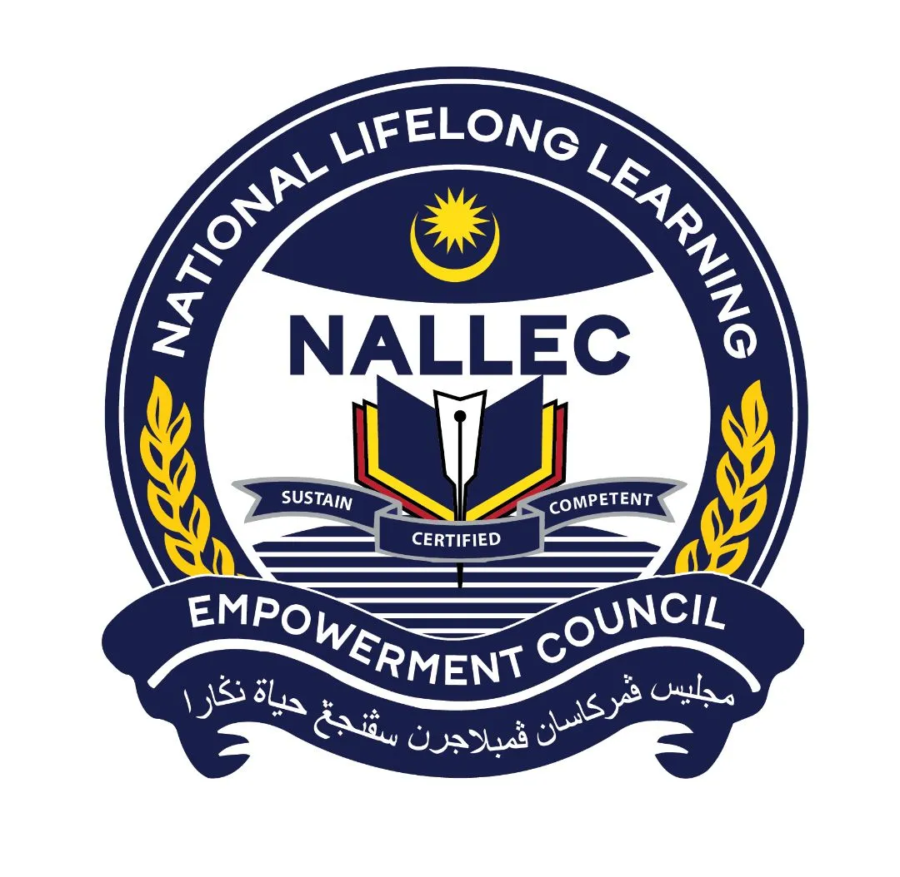
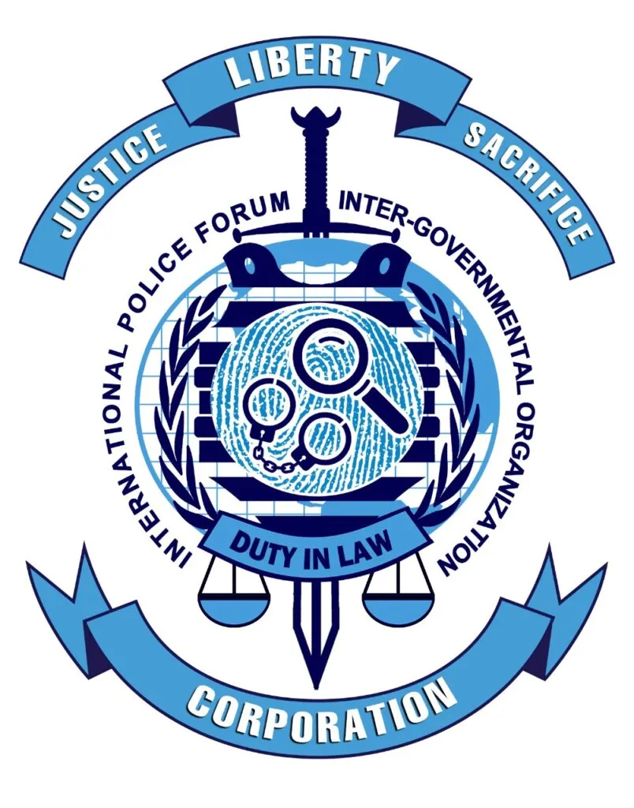
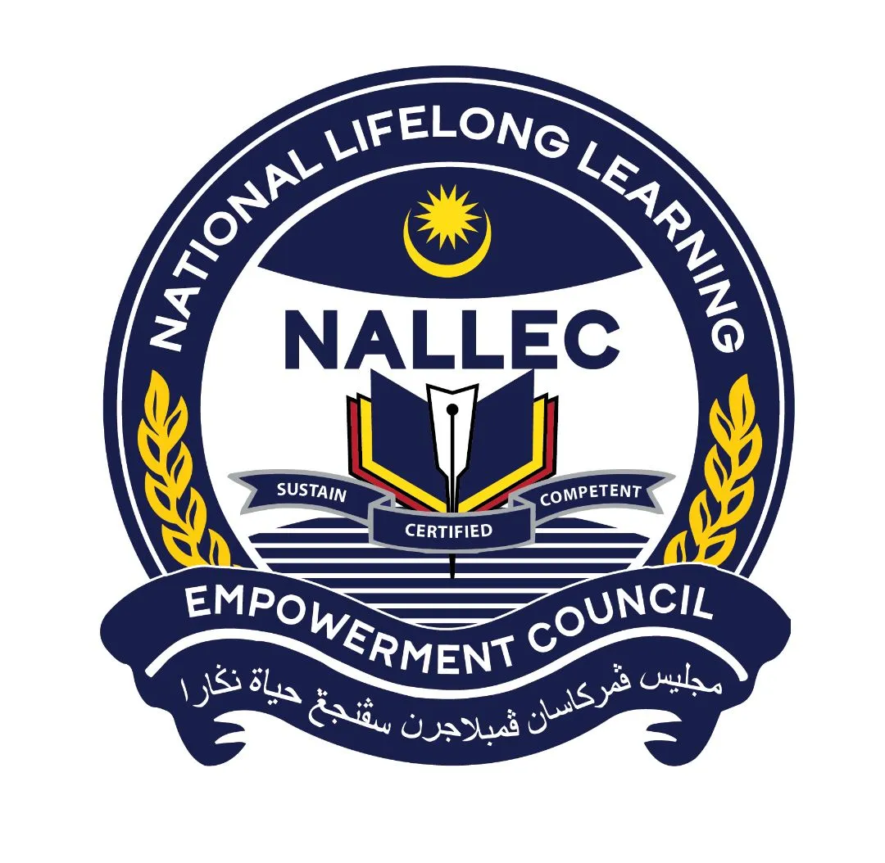
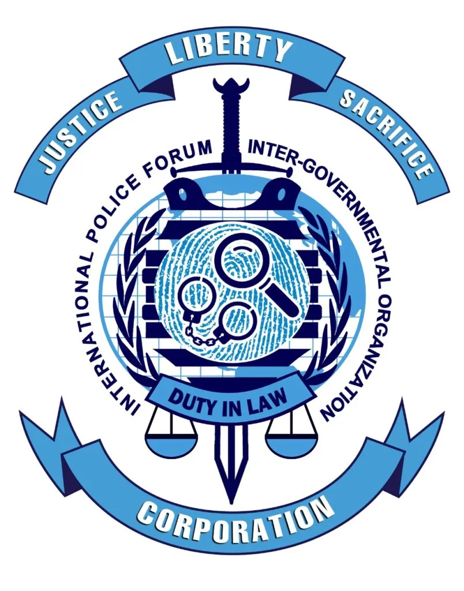
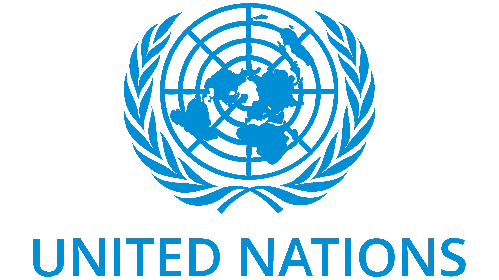
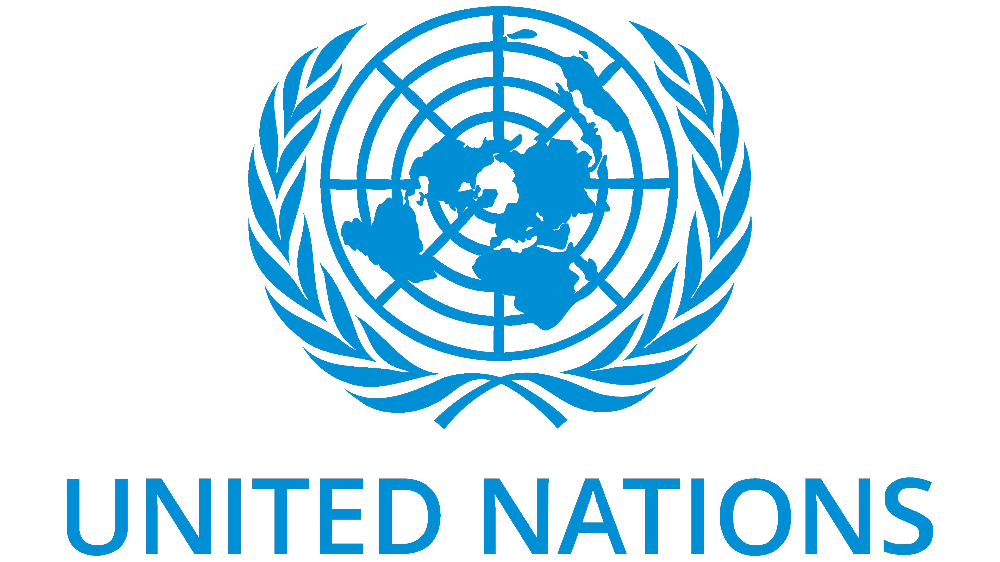

Our Major Collaborative Partners
.webp)
PWD SmartFarmability
PWD SmartFarmAbility is a pioneering social enterprise integrating sustainable environmental practices with smart technology to promote nutritional justice. Focused on regenerative farming, PWD SmartFarmAbility enhances ecosystem resilience and food security while advocating for inclusivity and societal transformation.
Collaborative partnership
Co-Farming Hub has partnered with PWD SmartFarmAbility to co-pilot and promote their innovative products in Melbourne. This collaboration aims to introduce sustainable farming technologies and practices, enhancing food security and environmental stewardship in the region. Together, we are committed to creating a regenerative future through strategic alliances and community engagement.

World Humanitarian Drive (WHD)
World Humanitarian Drive (WHD) is an international organization dedicated to promoting peace, education, and trade harmony. WHD's mission is rooted in compassion, equality, fairness, and morality, aiming to create a peaceful and harmonious world.
Collaborative partnership
Co-Farming Hub has partnered with WHD to help establish a new chapter in Australia, extending WHD's support to bring PWD SmartFarmAbility's innovative products to the region. This collaboration aims to promote sustainable agricultural practices and inclusivity, leveraging WHD's global reach and humanitarian mission to foster a regenerative and equitable future in Australia.
Eco Voice
Eco Voice is a leading environmental news platform dedicated to promoting sustainability and environmental awareness. It provides comprehensive coverage on eco-friendly initiatives, innovative technologies, and sustainable practices.
Collaborative partnership
Co-Farming Hub has partnered with Eco Voice to effectively communicate our new partnerships and projects. Through this collaboration, we aim to raise awareness about our sustainable initiatives and foster a greater understanding of the environmental impact of our work, reaching a broader audience committed to ecological stewardship.

The Native Shop
The Native Shop specialises in quality and innovative Australian products. We also have an extensive range of Australian native plants and seeds plus a selection of books on Australian plants and the environment. The Native Shop offers secure shopping and we guarantee the quality of the products.
Collaborative partnership
Co-Farming Hub has joined forces with The Native Shop, led by our partner Tim Langdon, to expand its reach and support our shared mission.

WynTree Friends
WynTree Friends serves as a vital physical hub for Co-Farming Hub, featuring a nursery that embodies sustainable agricultural practices. This nursery acts as a collaborative space where farmers, entrepreneurs, and scientists converge to innovate and implement solutions addressing food insecurity, climate change, and poverty. Through this partnership, WynTree Friends and Co-Farming Hub promote inclusivity, socio-economic inclusion, and a regenerative future
Other Partners


 



 



 



.webp)
.webp) 
